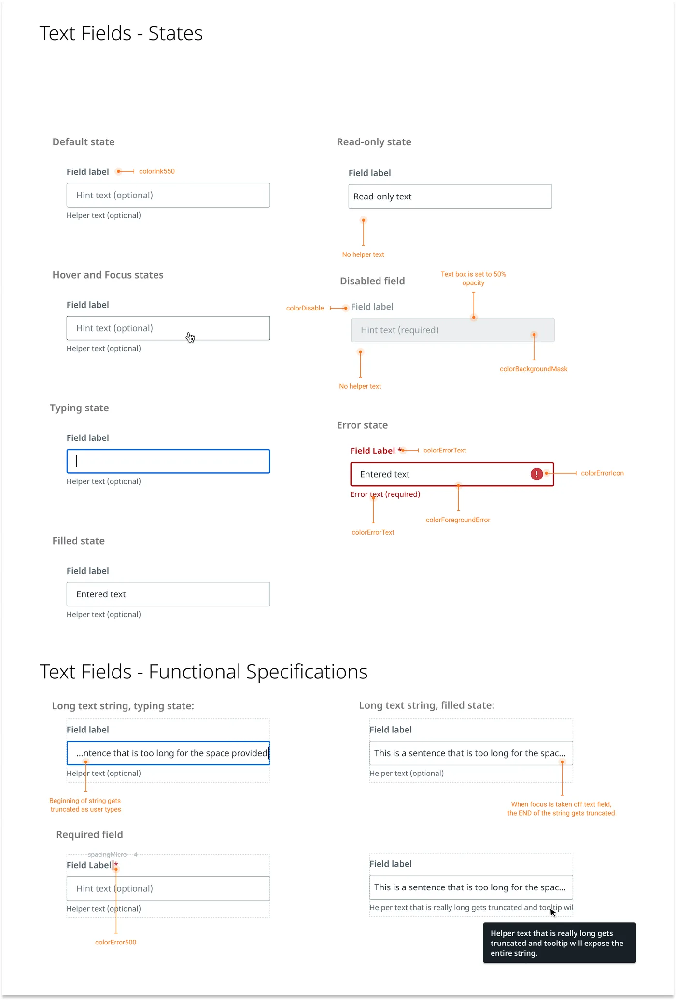
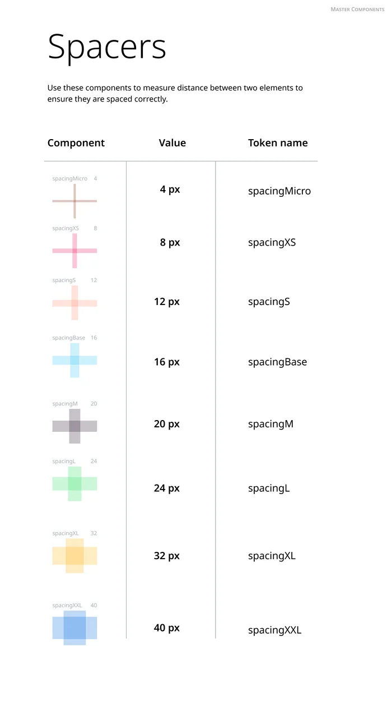
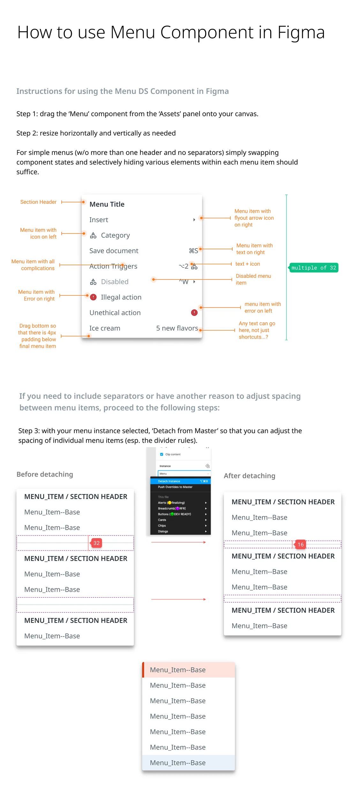
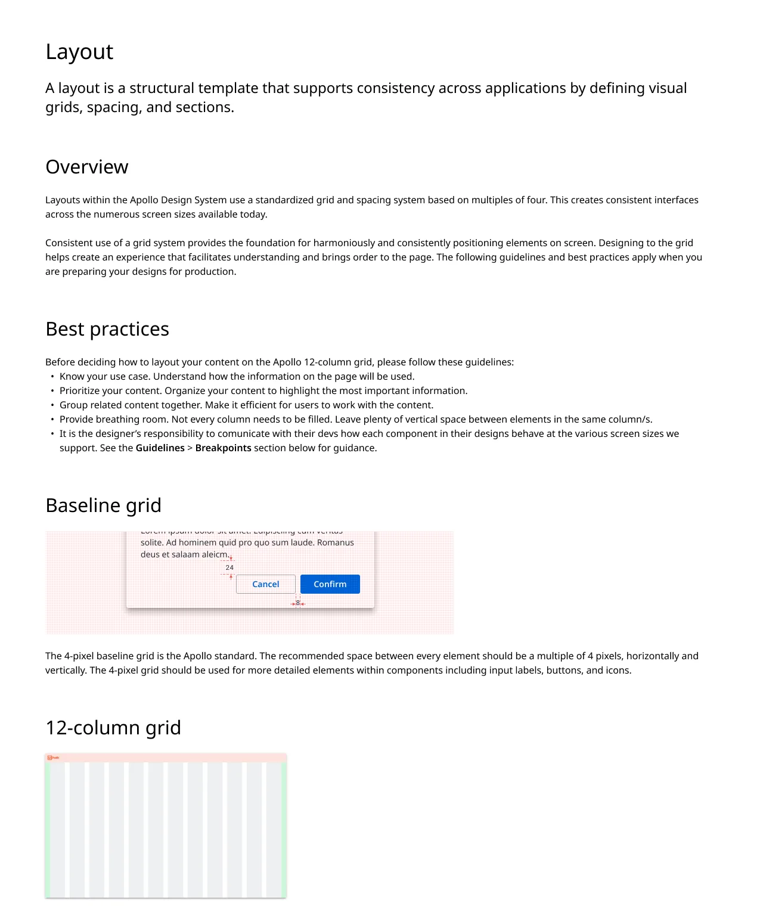
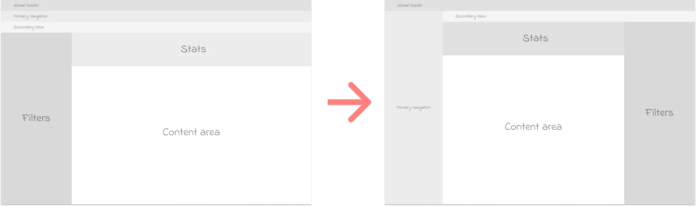
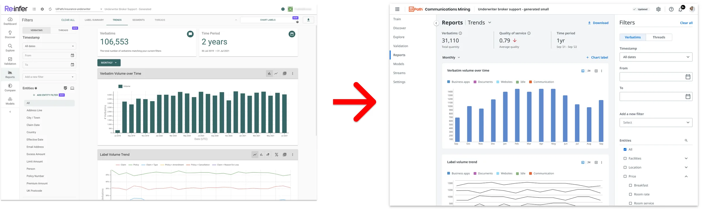
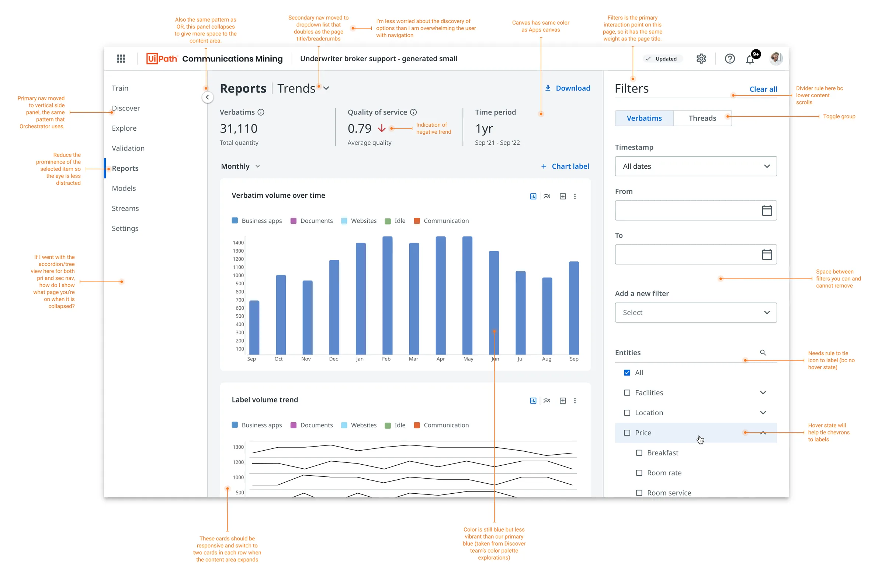

Case study · UiPath · 2019 to 2023
One design system for a growing product suite
- Role
- Product designer on the design system: components, documentation, foundations
- Team
- Two principal designers, then dozens of designers across product teams
- Outcome
- Supported 12+ desktop and mobile products and brought acquired products into the suite
Summary
UiPath's design team was new, and the product suite was growing fast, partly through acquisitions. We needed one design system, Apollo, that every product could be built from and that could grow with the suite. I helped build its components in Figma, wrote the documentation that told designers when and how to use them, and documented the foundations: layout grids, typography, spacing and color. Over four years the system grew to support more than a dozen products across desktop and mobile, and dozens of designers in several time zones.
The second half of the job was proving the system worked on products we hadn't designed. When UiPath acquired companies, their designers had to reskin their products to fit the suite. I redesigned one of them myself as a reference, to show what the system could do when applied carefully.

My role
I joined a newly formed design team that needed a system to grow with the product suite. I started by supporting our two principal designers with the design of controls. I then organized the controls into functional groups and built them as components in Figma, which the team had just adopted in place of Sketch. As the system matured I took on the documentation and the foundations, and later applied the system to an acquired product.
Because Figma was new to everyone, I also posted a Figma tip of the day in the company's design channel. Teaching the shortcuts was the fastest way to learn them myself, and it helped the whole team move faster in the new tool.
Key decisions
1. Build tools for designers into the library, not just components.
Checking spacing by eye against the specs was slow and easy to get wrong. Alongside the components, I built spacer components: one for each spacing token, labeled with its name and value, that designers could drop between two elements to check the gap. This was before Figma had variables, so there was no built-in way to see which token a gap used.
Tradeoff: spacers are extra layers in a file and have to be cleaned up before handoff. But they made the spacing rules visible right in the design, and the team's feedback on them was strongly positive.

2. Document how to use a component in Figma, not only when to use it.
Usage guidelines say when to pick a menu over a dropdown. They don't help a designer who can't get the menu component to do what they need. I wrote step-by-step guides for working with each component in Figma, including the edge cases, such as when to detach a component to change its spacing.
Tradeoff: two kinds of documentation take twice the upkeep, and the Figma guides go out of date whenever the tool changes. But a component is only useful if designers can make it do what they need, and changing a file someone else built is hard.

3. Write the foundations down before the team outgrows them.
As the team grew, the rules for layout lived in a few people's heads. I wrote the foundations documentation for layout grids, typography, spacing and color, and it was published on a documentation site connected to our Figma libraries. It set a 4-pixel baseline grid and a 12-column layout with fixed margins and gutters.

4. Prove the system could flex instead of rebuilding it.
Some designers felt the system was too rigid and looked dated, and there was talk of rebuilding it. When UiPath acquired Re:infer, a communications mining product, I had one week to bring its interface into the suite and show what the existing system could do. I first reorganized its information architecture with wireframes that showed where every section moved, so no one worried about losing functionality. Then I applied the system's colors, type ramp and layout grid, kept the visual hierarchy, and checked that it met WCAG AA accessibility guidelines, as every product I worked on had to.
Tradeoff: a one-week redesign can't solve every problem in a product. But a concrete, polished example settled the argument faster than any debate about whether the system was flexible enough.


What shipped
- A Figma component library organized by function, with spacer tools for checking spacing.
- Usage and how-to-use documentation for each component, and foundations for layout grids, typography, spacing and color, published on a documentation site connected to the Figma libraries.
- A redesign of the acquired communications mining product that became a stencil for the designers who continued work on it.

Evidence
- The system grew over four years to support more than a dozen products across desktop and mobile, and dozens of designers across product teams.
- The documentation let designers in several time zones find what they needed and get unstuck on their own.
- The spacer tools got strong positive feedback from the whole design team.
- The communications mining redesign matched dashboards in other products in the suite and became the reference for further work on the product, which shortened the time to get designs approved and handed to engineering. It also showed the system didn't need to be rebuilt from scratch, which saved the team significant time.
This was a team effort. I worked with some of the most talented designers I know to grow the system into what it became.
What I'd change
The menu guide tells designers to detach the component to adjust its spacing. Every detached copy drifts from the library and misses future updates. Today I'd build that flexibility into the component itself with Figma's variables and component properties, so designers never had to break it to get what they needed.